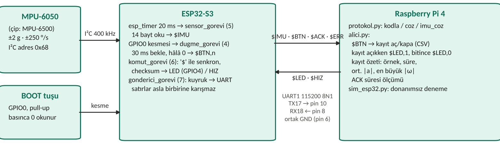
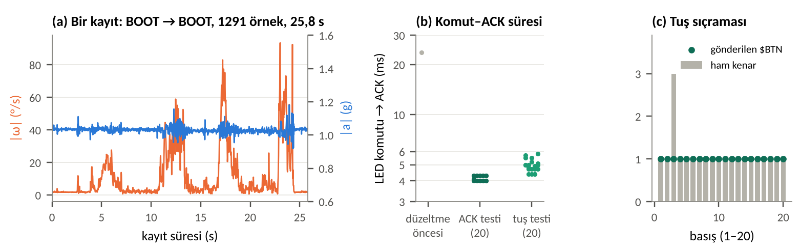

$BTN gönderir, Pi kaydı başlatır ya da durdurur. Kayıt sürerken LED yanar, kayıt bitince Pi örnek sayısı, süre, ortalama ivme ve en büyük dönü hızından oluşan bir özet yazar. 60 saniyelik çalıştırmada 3001 satırın hiçbiri hatalı değildir (50,00 Hz). 13 kayıttaki 6660 örnek aralığının hepsi 20 ms'dir. LED komutunun ACK süresi 20 tekrarda 4,0–4,3 ms'dir. Tuşa yapılan 20 basış tam 20 $BTN üretmiştir. Bunlardan birinde tuş 3 kez sıçramış, yazılım bunu tek basış olarak saymıştır.Temel sistemde iş bölümü şöyledir. Zamanlaması kesin olması gereken ölçüm işini ESP32 yapar, doğrulama ve kayıt işini Linux çalışan Pi yapar, iki kart da basit bir metin protokolüyle konuşur. Eklemenin amacı, kaydın ne zaman başlayıp biteceğini kullanıcının fiziksel bir düğmeyle belirlemesidir. Bunun için ayrı bir buton yerine ESP32-S3 kartında zaten bulunan BOOT tuşu (GPIO0) kullanılmıştır. Düğme olayı protokole yeni bir mesaj tipi ($BTN,n) olarak eklenmiştir. Kararı Pi verir: kaydı açar ya da kapatır, durumu $LED komutuyla ESP32'deki LED'e yansıtır ve her kaydı ayrı bir CSV dosyasına yazar. Mekanik bir tuş basılırken birkaç kez açılıp kapanabilir (sıçrama). Projenin ölçüm hedeflerinden biri de bu sıçramanın fazladan $BTN üretmediğini göstermektir.

Şekil 1. Blok şema. Parantez içindeki sayılar FreeRTOS görev öncelikleridir.
ESP32 tarafında dört görev vardır. esp_timer her 20 ms'de bir çağrı yapar, bu çağrı da sensor_gorevi'ni bir görev bildirimiyle uyandırır. Uyanan görev sensörün 0x3B adresinden başlayan 14 baytını okuyup $IMU satırını hazırlar. Periyot zamanlayıcıdan geldiği için okuma ve biçimlendirme süresi periyoda eklenmez. $HIZ komutu zamanlayıcıyı durdurup yeni periyotla yeniden başlatır. BOOT tuşunun düşen kenarı bir kesme üretir. Kesme yalnızca bir semafor verir, işi dugme_gorevi yapar: 30 ms bekler, tuş hâlâ basılıysa sayacı artırıp $BTN gönderir. Ardından tuş bırakılana kadar bekler, bırakırken oluşan kenarları da yok sayar. komut_gorevi gelen baytları satır satır toplar. Her $ yeni bir satır başlatır, böylece yarım kalan veri bir sonraki komutu bozmaz. Satır checksum ile doğrulanır, sonra LED ya da HIZ komutu uygulanır. UART'a yazan tek görev gonderici_gorevi'dir. Diğer görevler satırlarını bir kuyruğa koyar, böylece aynı anda gelen bir ACK ile bir IMU satırı birbirine karışmaz. Pi tarafında protokol.py satırı kodlar ve çözer. alici.py satırları doğrular, $BTN gelince kaydı açar ya da kapatır, kayıt özetini hesaplar ve ACK sürelerini ölçer. sim_esp32.py donanım olmadan deneme için sanal bir seri port açar. Bu pencerede Enter'a basmak BOOT tuşuna basmak yerine geçer.
| ESP32-S3 | Bağlandığı yer | Not |
|---|---|---|
| GPIO17 (UART1 TX) | Pi pin 10 (RXD) | çapraz: gönderen → alan |
| GPIO18 (UART1 RX) | Pi pin 8 (TXD) | çapraz |
| G | Pi pin 6 (GND), breadboard "–" rayı | ortak toprak (bkz. Bölüm 6) |
| 3V3 / G (karşı sıra) | MPU-6050 VCC / GND | sensör 3,3 V'tan beslenir |
| GPIO8 / GPIO9 | MPU-6050 SDA / SCL | I²C 400 kHz |
| GPIO4 | 330 Ω → LED → GND | kayıt göstergesi ($LED) |
| GPIO0 | kart üzerindeki BOOT tuşu | kablo yok; basınca 0 okunur |
Tablo 1. Bağlantılar. Kartlar ayrı USB kablolarından beslenir, Pi'nin 5 V pinleri (2 ve 4) boştur. Pi'de seri konsol kapatılmış ve dtoverlay=disable-bt ile asıl UART seçilmiştir (/dev/serial0 → ttyAMA0).
GPIO0 bir "strapping" pinidir: kart açılırken basılı tutulursa ESP32 program yerine yükleme kipine girer. Program çalışırken ise sıradan bir giriştir, bu yüzden tuşa çalışma sırasında basılır, açılışta basılmaz.
Her satır $GÖVDE*HH\r\n biçimindedir. HH, $ ile * arasındaki karakterlerin XOR'unun onaltılık hâlidir. Bağlantı 115200 bit/s, 8N1'dir.
| Yön | Satır | Örnek |
|---|---|---|
| ESP32 → Pi | IMU,t_ms,ax,ay,az,gx,gy,gz (g, °/s) | $IMU,37974,0.133,-0.055,1.025,-1.68,-0.36,-0.18*77 |
| ESP32 → Pi | BTN,n: n. basış (ekleme) | $BTN,1*45 |
| ESP32 → Pi | ACK,komut,değer | $ACK,LED,1*35, $ACK,HIZ,50*17 |
| ESP32 → Pi | ERR,BICIM|CHECKSUM|KOMUT|I2C | $ERR,CHECKSUM*64 |
| Pi → ESP32 | LED,0|1 · HIZ,1..100 | $LED,1*50, $HIZ,50*72 |
Tablo 2. Mesajlar. BTN sayacı her basışta bir artar. Pi sayacın atlayıp atlamadığını denetler, böylece kaybolan bir $BTN fark edilir.

Şekil 2. (a) BOOT ile açılıp kapanan bir kayıtta breadboard elle eğilirken ivme ve dönü hızının büyüklüğü. (b) LED komutu ile ACK arasındaki süre, logaritmik eksen. (c) 20 basışta ESP32'nin saydığı ham kenarlar ve gönderilen $BTN sayısı.
Sensöre dokunulmadan yapılan 60 saniyelik çalıştırmada (olcum/btn_20.txt) Pi 3001 geçerli satır aldı: 50,00 Hz, 0 hatalı satır. 65 saniyelik ikinci çalıştırmada (hiz_60s.txt) 3251 satır geldi (49,92 Hz). Tek hatalı satır, program açıldığı anda ESP32'nin yarısını göndermiş olduğu ilk satırdır (BICIM). Pi'nin kaydettiği 13 dosyada ESP32 zaman damgaları ardışık örnekler arasında 6660 aralığın hepsinde tam 20 ms göstermektedir. Yani kayıtlar boyunca ne ESP32 bir periyodu kaçırmış ne de Pi bir satırı kaybetmiştir. ESP32 tarafındaki sayaçlar da aynı sonucu verir: 10 saniyede 500 satır gönderilmiş, kuyruktan atılan satır 0, en uzun UART yazması 199 µs. Düz duran sensörde ortalama |a| 1,03 g, |ω| yaklaşık 2 °/s'dir. Bu fark, kalibrasyon yapılmadığı için ivme ölçeğindeki küçük hatayı ve jiroskobun sıfır kaymasını gösterir.
alici.py --ack-testi 20 her 0,3 s'de bir $LED komutu gönderip ACK'nin gelişine kadar geçen süreyi ölçer. 20 komutun 20'si yanıtlandı: en kısa 4,0 ms, ortalama 4,2 ms, en uzun 4,3 ms (ack_20.txt). Tuş testi sırasında kayıt açılıp kapanırken gönderilen 20 LED komutunda süre 4,4–5,8 ms'dir (ortalama 4,9 ms). Bu sürenin yaklaşık 2,3 ms'si hattaki iletimdir: 11 baytlık komut ile 15 baytlık ACK, 115200 bit/s'de bayt başına 87 µs sürer. Kalanı, ACK'nin o anda gönderilmekte olan bir IMU satırının arkasında beklemesinden ve Pi'deki okuma döngüsünden gelir. Kodun ilk sürümünde bu süre 23,7 ms ölçülmüştü (Bölüm 6).
Pi'de alici.py çalışırken BOOT tuşuna 60 saniye içinde 20 kez basıldı. Pi 20 $BTN aldı (sayaç 2 → 21, atlama yok). Kayıt 10 kez açılıp kapandı, LED her seferinde doğru yanıp söndü. Aynı basışlarda ESP32'nin konsoluna yazdığı ham kenar sayıları (btn_esp32_monitor.txt) 19 basışta 1, 1 basışta 3 kenar göstermektedir. Yani tuş bir kez gerçekten sıçramış, ama 30 ms'lik bekleme ve bırakma beklemesi sayesinde tek basış olarak sayılmıştır. Ek 5 basışla birlikte toplam 25 basışın hiçbirinde fazladan $BTN gönderilmemiştir.
Pi çalışırken ikinci bir oturumdan seri porta bozuk checksum'lı $LED,1*00 yazıldı, ESP32 $ERR,CHECKSUM ile yanıt verdi. led 7 komutuna $ERR,BICIM döndü. hiz 100 ve hiz 50 komutları 4,4 ms'de onaylandı. Ölçüm hızı, iki komutun arasına düşen 5 saniyelik pencerede 92,1 Hz'e çıkıp yeniden 50 Hz'e döndü (hiz_ve_hata.txt).
raspi-config ile kapatıldı. (2) ESP32'de TX ve RX kabloları ters takılıydı (GPIO17 Pi'nin TXD'sine gidiyordu). ESP32 kendi gönderdiği satırları geri alıyor, her birini bilinmeyen komut sayıp $ERR,KOMUT ile yanıtlıyordu. Bu yanıtlar da geri geldiği için hat dolana kadar büyüyen bir döngü oluşuyordu (10 saniyede 114 kB). Kablolar düzeltildi. Kodda da önlem alındı: ESP32 artık kendi satır tiplerinden biri (IMU, ACK, ERR, BTN) geri gelirse yanıt vermez, yalnızca bir uyarı sayacını artırır. (3) Pi'nin GND'si (pin 6) bağlı değildi. Pi'ye gelen veri düzenli ama okunamazdı. GND takılınca satırlar temiz geldi. Bu sırada Pi, mini UART'tan (ttyS0) asıl UART'a (ttyAMA0) da geçirildi. Asıl sebebin GND olduğu sonradan anlaşıldığı için bu adımın tek başına gerekli olup olmadığı ayrıca denenmedi.komut_gorevi UART'ı uart_read_bytes(…, 64, 20 ms) ile okuyordu. Bu çağrı 64 bayt dolana ya da 20 ms geçene kadar dönmediği için 11 baytlık her komut 20 ms bekliyordu. Görev artık ilk bayt gelene kadar bekliyor (portMAX_DELAY ile 1 bayt), sonra tamponda ne varsa hiç beklemeden alıyor. Böylece komut gelir gelmez işleniyor ve süre 4,0–4,3 ms'ye indi.hız 10 (ı ile) yazılınca komut tanınmadı ve ESP32'ye hiçbir şey gönderilmedi. Pi tarafı bunu doğru biçimde "bilinmeyen komut" saydı. Sonraki sürümde alici.py ı harfini i olarak da kabul eder.main.c) ve Pi (protokol.py, alici.py, sim_esp32.py) kodlarının yazımında, şekil çizim betiğinde ve bu raporun taslağının hazırlanmasında yapay zekâ asistanından (Claude) yararlanılmıştır. Devreyi ben kurdum. Kodları kendi bilgisayarımda derleyip karta yükledim ve Pi'de çalıştırdım. Bütün ölçümleri ve hata ayıklama denemelerini donanım üzerinde kendim yaptım.